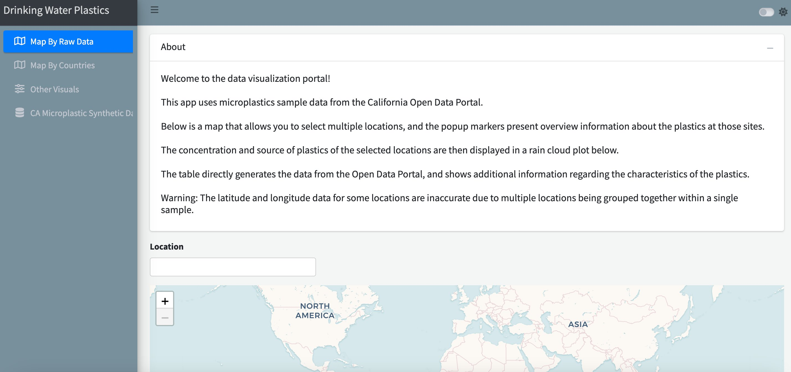
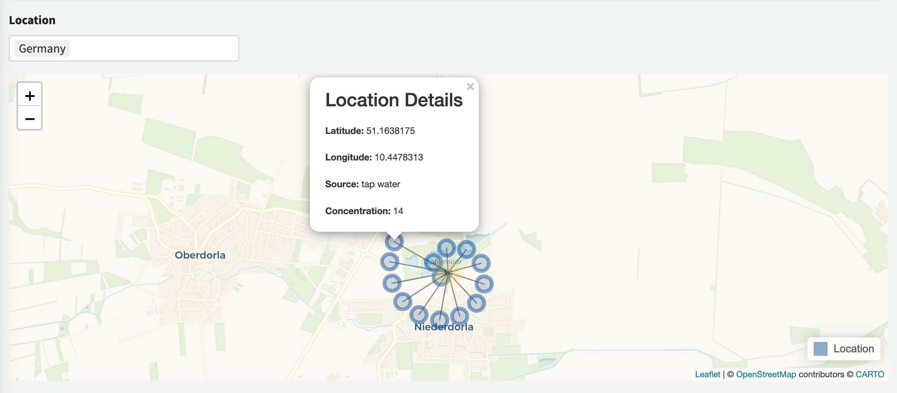
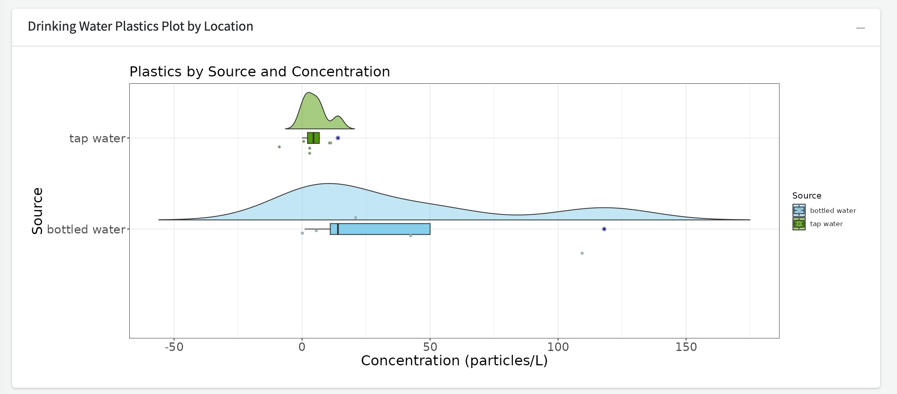
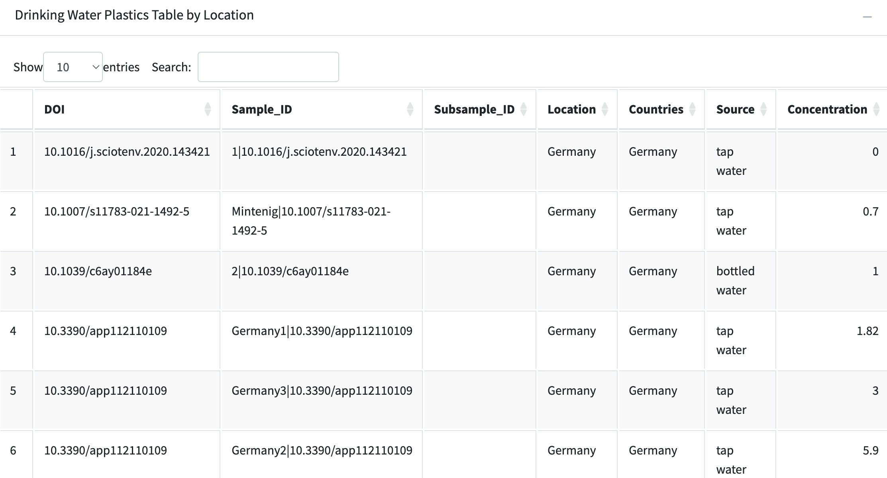
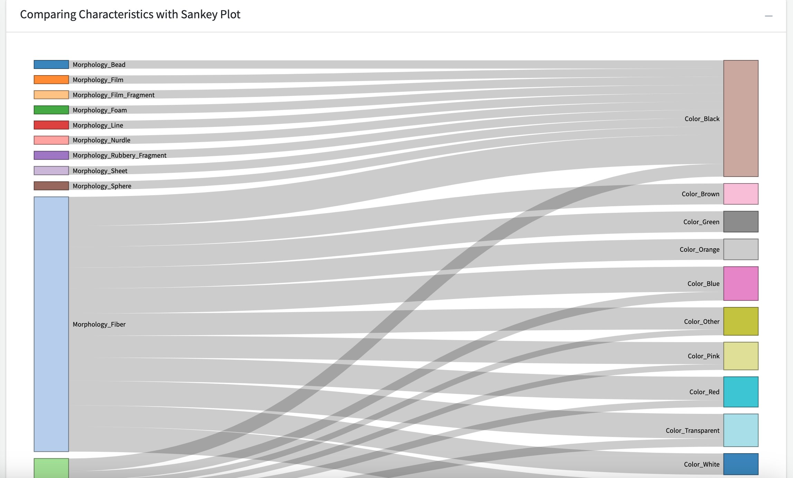
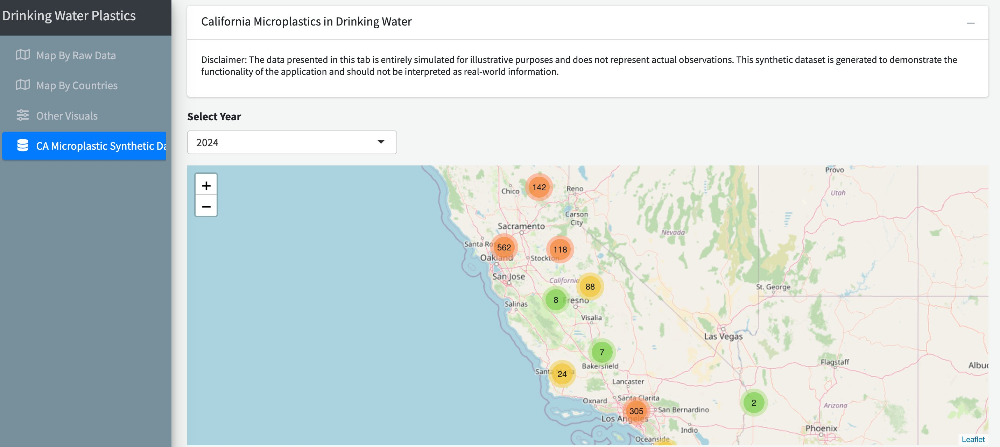
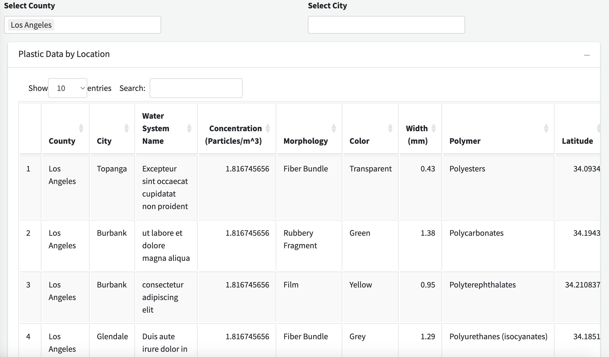
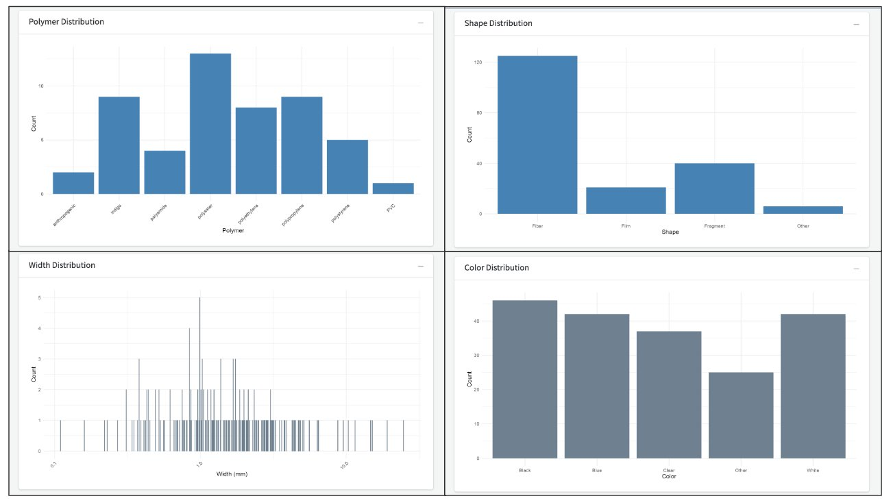

Data Visualization Tutorial
Hannah Sherrod, Nicholas Leong, Win Cowger
2024-05-20
Source:vignettes/datavisualization.Rmd
datavisualization.RmdDocument Overview
This document outlines a workflow to utilize the Data Visualization
Tool from the One4All portal. After reading this document, users will
have a better understanding of the processes involved in creating this
app and how to navigate through it. The purpose of this tool is to
analyze and interpret microplastics data using plots, tables, and maps.
The 'Map By Raw Data', 'Map By Countries', and
'Other Visuals' tabs use data from the California Open Data
Portal. The 'CA Microplastic Synthetic Data' uses synthetic
data, which we aim to replace with data from the Validator tool.
Running the App
To access the Data Visualization Tool, go to this link openanalysis.org/microplastic_analysis/
or go to our Github
and link it directly to your own device in R. After setting up the
Github to your device, go to the 'data_visualization'
folder and select the app.R file to run the app.

Map By Raw Data, Map By Countries
The 'Map By Raw Data' and
'Map By Countries' tabs allow users to look at the
concentration of microplastics by cities or countries. Users can select
one or more locations, generating the following:
Map: The map displays the location(s) selected. Each marker represents a dataset at that location and includes the ‘Latitude’, ‘Longitude’, ‘Source’, and ‘Concentration’.

Plot: The app generates a raincloud plot and displays the plastics by source (bottled or tap) and concentration (particles/L), based on the location(s) selected.

Table: For the selected location(s), data from the California Open Data Portal is displayed.

Other Visuals
The 'Other Visuals' tab allows users to compare the
following microplastic characteristics from the data implemented in the
tool: morphology, color, and material. Users will select the sankey plot
they wish to view and the plot will generate the relationship between
two of the characteristics.

CA Microplastic Synthetic Data
The 'CA Microplastic Synthetic Data' tab utilizes data
that is entirely simulated for illustrative purposes to demonstrate the
functionality of the tool. Users can select various counties and cities
within the state of California, displaying spatial, temporal, and
attribute statistics as well as treatment levels.


